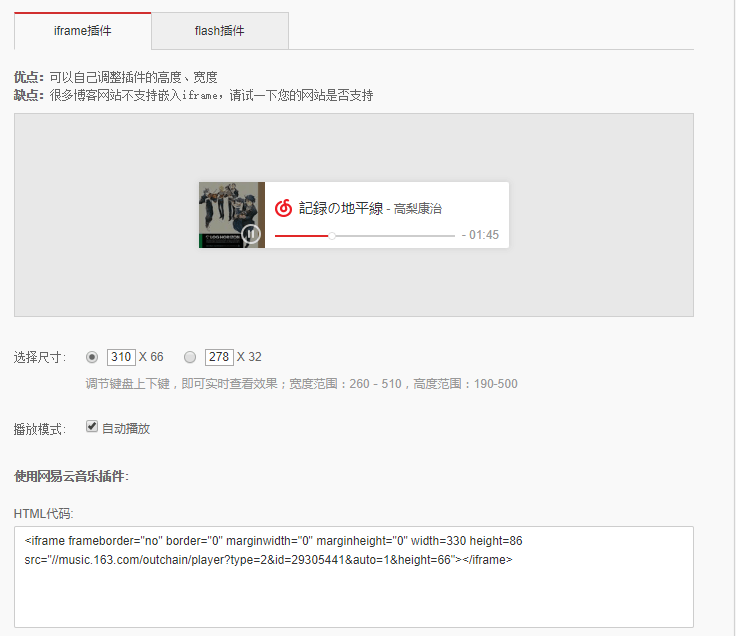
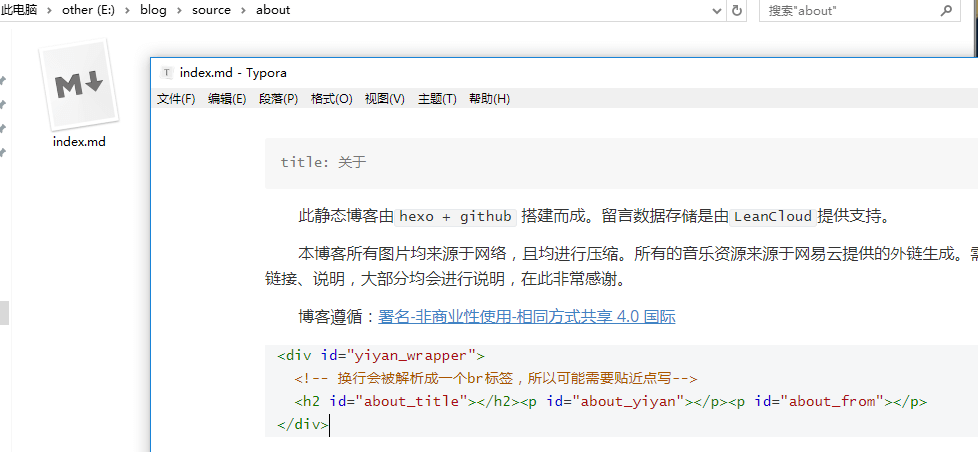
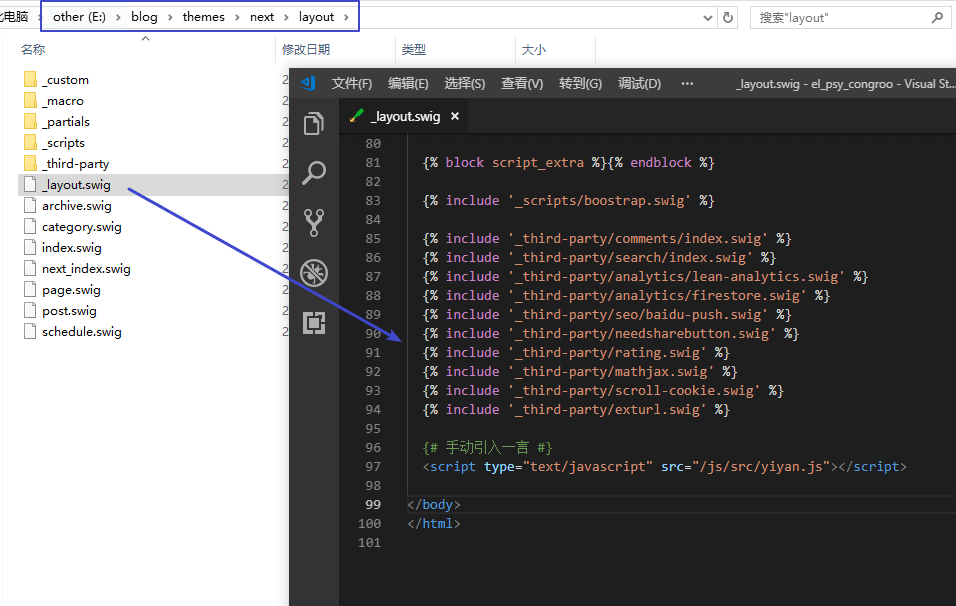
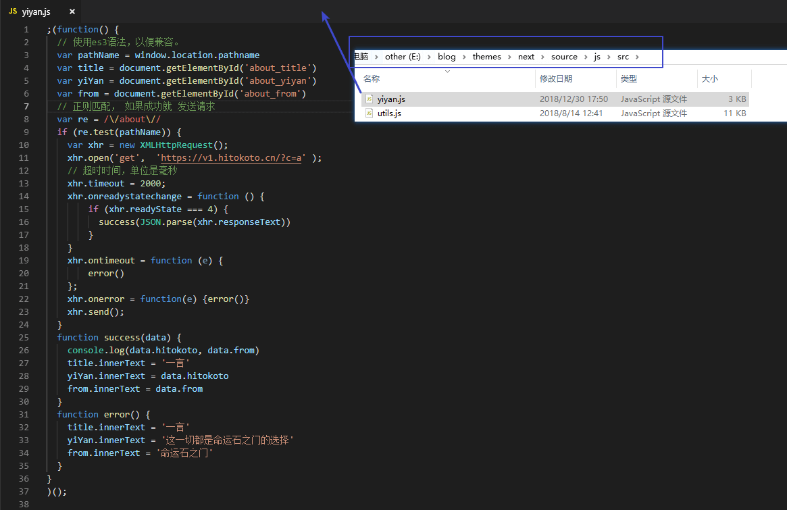
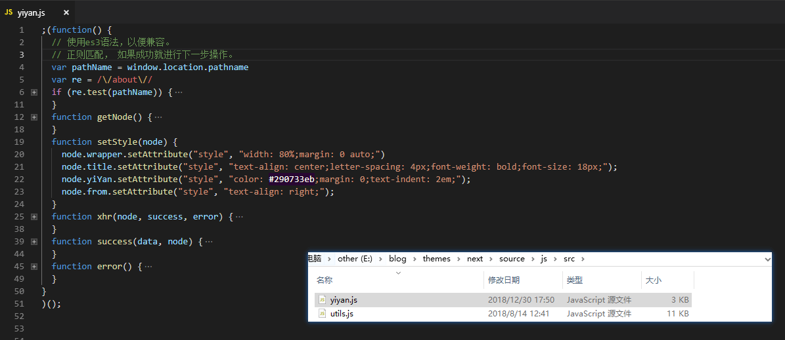
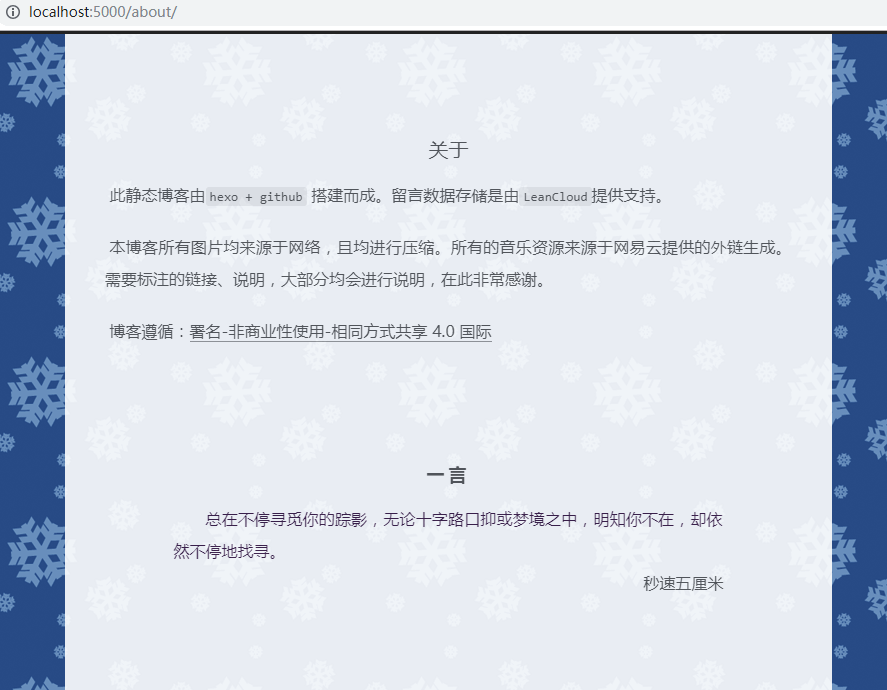

我是如何在hexo中的文章中引用js
前置
hexo静态博客的框架，是通过解析并渲染markdown，从而生成一篇对应的文章。
markdown语法是允许使用
html和css对文档进行拓展，但是不允许在文档中嵌入JavaScript代码的，这是为了安全才采取这种策略。所以通过md文件渲染出的文章，是不支持执行js代码的！！！使用hexo的next主题。
使用typora编辑器
使用一言API随机获取一句话。
这篇文章将解释我是如何能够将需要js发送请求才能得到的数据，展示在about页面。
思考
经过一段时间的思考，得到了下面几种想法。
想法一
寻找第三方的iframe或者flash插件，就像网易云音乐的外链一样。然后将他放入对应的md文件中。

想法二
考虑直接使用html文件进行编写，同时在hexo的配置文件中，选择跳过渲染这个文件。
测试后发现，确实可以使用html文件，并且能够使用js，可是样式怪怪的，不能很好的与其他文章形成统一，适合展示单独的一个页面。
想法三
还是通过md文件写文章，然后通过在md中埋入dom节点，但是不直接在文章内部内嵌js代码，而是使用hexo引入js文件的方式，在网页加载的时候，从另一个地方引入js文件，对文章进行操作。
想法四
放弃这个需求。
实现
此实现思路是基于想法三，一些尝试之后，成功实现了需求。下面是具体的实现步骤。主要看图，辅以必要文字。
步骤零
如何具体设置关于页面，请自行搜索。打开文档，在最下方加入必要的html标签。

<div id="yiyan_wrapper">
<!-- 换行会被解析成一个br标签，所以可能需要贴近点写-->
<h2 id="about_title"></h2><p id="about_yiyan"></p><p id="about_from"></p>
</div>步骤一
打开./themes/next/layout/_layout.swig，在最后部分加入如下代码。
<script type="text/javascript" src="/js/src/yiyan.js"></script>
步骤三
打开./themes/next/source/js/src，新建一个yiyan.js添加代码。


;(function() {
// 使用es3语法，以便兼容。
// 正则匹配， 如果成功就进行下一步操作。
var pathName = window.location.pathname
var re = /\/about\//
if (re.test(pathName)) {
console.log('一言~')
var node = getNode()
setStyle(node)
xhr(node, success, error)
}
function getNode() {
var wrapper = document.getElementById('yiyan_wrapper')
var title = document.getElementById('about_title')
var yiYan = document.getElementById('about_yiyan')
var from = document.getElementById('about_from')
return {wrapper: wrapper, title: title, yiYan: yiYan, from: from}
}
function setStyle(node) {
node.wrapper.setAttribute("style", "width: 80%;margin: 0 auto;")
node.title.setAttribute("style", "text-align: center;letter-spacing: 4px;font-weight: bold;font-size: 18px;");
node.yiYan.setAttribute("style", "color: #290733eb;margin: 0;text-indent: 2em;");
node.from.setAttribute("style", "text-align: right;");
}
function xhr(node, success, error) {
var xhr = new XMLHttpRequest();
xhr.open('get', 'https://v1.hitokoto.cn/?c=a');
// 超时时间，单位是毫秒
xhr.timeout = 2000;
xhr.onreadystatechange = function () {
if (xhr.readyState === 4) {
success(JSON.parse(xhr.responseText), node)
}
}
xhr.ontimeout = function() {error(node)};
xhr.onerror = function() {error(node)}
xhr.send();
}
function success(data, node) {
console.log(data.hitokoto, data.from)
node.title.innerText = '一言'
node.yiYan.innerText = data.hitokoto
node.from.innerText = data.from
}
function error(node) {
node.title.innerText = '一言'
node.yiYan.innerText = '这一切都是命运石之门的选择'
node.from.innerText = '命运石之门'
}
}
)();步骤四
进行本地预览与调整。
